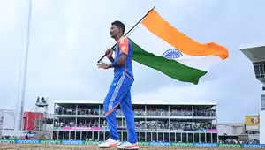

Latest News
- Marufa on a mission to improve death bowling skills
5h ago - Harry Brook wants 'to be Harry Brook, not anybody else'
17h ago - Dushmantha Chameera ruled out of India T20Is
20h ago - Punjab Kings unlikely to renew Bayliss contract; looking for an Indian coach
1d ago - Want to be as ruthless as we can as a batting unit - Pope
1d ago - Associates decry scrapping of East Asia Pacific T20 Qualifier
1d ago - Charith Asalanka to lead SL in T20I series against India
2d ago
More news...
Latest Photos
-

Anderson's 21-year-old career in pictures
-
India's World Cup win celebrations
-
Rohit Sharma: Two World Cups bookend a sterling T20I career
-

Virat Kohli: A T20 behemoth with a title in tow
-

T20 World Cup 2024, Final - India's celebrations, South Africa's dejection
Kings unlikely to renew Bayliss contract, seek an Indian coach
Having finished eighth and ninth respectively in the last two seasons under Bayliss, the franchise might look for pastures new
Dushmantha Chameera ruled out of India T20Is
The Sri Lankan pacer hasn't recovered from Bronchitis and respiratory infection, and has been replaced by Asitha Fernando

Harry Brook wants 'to be Harry Brook, not anybody else'
England's latest batting superstar wants to keep things simple even as he dares to dream big

Ireland, Zimbabwe gear up for historic Test in Belfast
This will be the first men's Test match between these two sides and also the first home Test for Ireland since their inaugural Test against Pakistan in 2018

Stoinis, du Plessis fire TSK to Eliminator win over MI New York
A 101-run stand between du Plessis and Devon Conway helped TSK chase down 163 and knock the holders out
Upcoming Matches
- Match 1: India vs South Africa
- Match 2: England vs West Indies
- Match 3: Australia vs Pakistan
- Match 4: Ireland vs Oman
- Match 5: UAE vs Uganda
- Match 6: IND-W vs SA-W
- Match 7: Eng-W vs Aus-W
Specials
-

India's World Cup win wasn't a feeling, it was an emotion
It was the kind of emotion that cannot easily be explained. There was pure joyfor sure. But there was also relief, and that bit of unexplained mania
-

Saurabh Netravalkar Interview: Filing for patents to winning Super Overs
The engineer from Oracle and lead bowler of USA opens up after catching the eye of the global cricket community
-
When dragons roamed cricket's empire
Canada is set to meet its oldest cricket rival on Saturday, and they have a score to settle
-
Heinrich Klaasen: I am not trying to impress anyone anymore
In an exclusive interview, the South African opened up on the work that went behind honing his six-hitting, his detailed preparation against spin, his cricketing hero(es) and a lot more